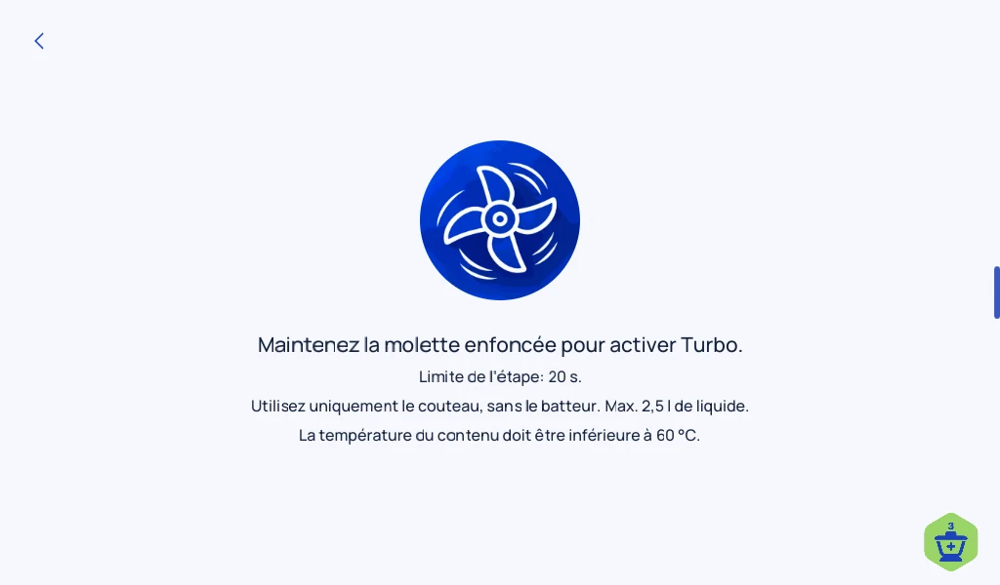
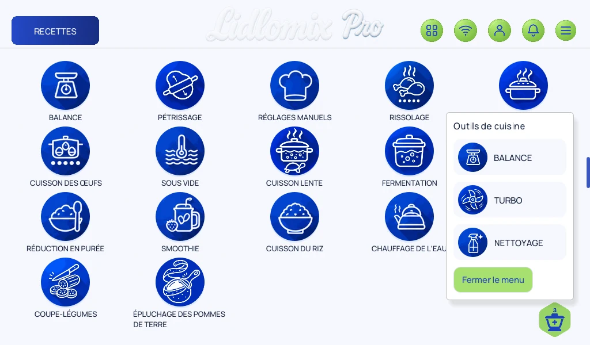

Monsieur Cuisine Connect ·
Réglages et raccourcis dans la version 0.16.4
Depuis la version 0.15.3, j'ai changé la façon dont le robot est réglé sur l'écran. Les minutes et les secondes défilent séparément, la température et la vitesse se déplacent sur le côté, et après avoir tout réglé, appuyez simplement sur Démarrer. L'image du plat peut être développée à travers l'écran, et de l'échelle, Turbo et Washback à la même étape de la recette.
Température et vitesse déplacées sur le côté
Le premier éditeur avait un cercle d'inspiration intelligente. Après des répétitions, j'ai épaissi la bordure et élargi la zone de contact. Lors du choix d'une température ou d'un engrenage précis, le niveau de mouvement des doigts était plus pratique. La valeur sélectionnée est grande et visible au milieu, et sur les côtés vous pouvez voir les paramètres adjacents. Déplacer à gauche augmente la valeur, à droite la baisse. J'ai enlevé la liste supplémentaire sous la roue.

Temps en deux colonnes et une Start
Touchez le champ de temps, puis déplacez les minutes ou les secondes en haut ou en bas séparément. Le déplacement d'une colonne laisse l'autre inchangé. Le bouton physique régule la colonne active. Dans de longs programmes comme la fermentation, les colonnes montrent les heures et les minutes. Les modifications aux champs modifiables s'appliquent immédiatement. Vous pouvez aller de temps en temps à la température et appuyez sur Démarrer sans paramètres d'approbation séparés.
Dans les réglages manuels, l’écran affiche une limite de 15 minutes à la vitesse 10. Sur le Connect, elle s’applique aux vitesses 7 à 10. Avec le chauffage, un message indique que la vitesse maximale est de 3. Cette limite vaut aussi pour la rotation en sens inverse. Lorsque les réglages le permettent, la minuterie manuelle accepte jusqu’à 99 minutes et 99 secondes. Les programmes automatiques ont leurs propres plages.

Programmes de lecteurs et direction du roulement
Une touche change de direction. Lorsque vous tournez à droite, vous pouvez voir une lame avec des flèches, et lorsque vous tournez à gauche, vous pouvez voir un rabat avec des flèches. J'ai ajouté environ un tiers des paramètres et variantes de la pâte. Les gâteaux durs, doux et liquides ont leur propre graphisme. L'en-tête du programme affiche une petite icône dans le menu.
Lors de la cuisson des oeufs, j'ai agrandi les descriptions de la taille, du degré de cuisson et du temps. Dans chaque rangée, un champ bleu est actif, les autres ont un fond blanc. Dans la cuisson à la vapeur, l'option Chaleur avant le comptage a une zone plus grande et une distance de Start and Stop. Un intervalle similaire est confirmé par l'hypothèse d'un apéritif et d'une couverture pour couper les légumes.
Image complète des plats et des carreaux plus courts
Dans une recette ouverte, touchez la sangle photo deux fois pour voir l'ensemble de l'image en proportion. Une touche ferme l'aperçu et retourne à la recette. Le geste fonctionne dans le catalogue hors ligne Monsieur Cuisine et dans les Recettes Adaptées Pro. Dans le répertoire Pro, la carte réserve trois lignes pour le titre, et le nom complet est visible lorsqu'il est ouvert.

Turbo, poids et lavage en tant que programmes complets
Turbo et Poids sont à côté de Commencer dans vos propres paramètres. Vous pouvez également ouvrir un lavage à partir du menu flottant. Chaque raccourci affiche le même plein écran qu'un programme séparé. Retour à la recette restaure l'étape actuelle et Retour au programme conserve les paramètres prédéfinis. Pour utiliser Turbo, vous devez tenir le bouton sur l'écran du programme.




Toutes les rejets après 0.15.3
- 0.15.4 — L'anneau du bouton physique s'éteint lorsque Connect est endormi et s'enflamme lorsqu'il se réveille.
- 0.15.5 - Tours de commutation avec une seule touche et un choix séparé d'unité de temps pour régler le bouton. Dans cette série d'œuvres il y avait aussi des icônes plus grandes, des variantes de gâteaux et d'oeufs, des descriptions plus claires et de plus grands champs d'options pour la vapeur et les apéritifs.
- 0.15.6 — Aperçu en plein écran d'une photo de la recette dans les deux catalogues.
- 0.15.7 — Tuiles inférieures dans les recettes Pro Adaptées, avec trois lignes par titre.
- 0.15.8 — champs temps rond avec sélection d'unité et + et − boutons.
- 0.15.9 — un éditeur séparé de grande durée avec une bordure à droite et un choix d'unité.
- 0.16.0 — Paramètres personnalisés étendus jusqu'à 99 min et 99 sec, boutons min et sec centrés, et support de cette gamme dans le module Connect.
- 0.16.1 — plus du double de la taille d'un grand périmètre d'éditeurs et d'une zone plus large qui répond à une courte traînée.
- 0.16.2 — Colonnes de temps verticales, paramètres instantanés, démarrez sous l'éditeur, limitez les messages et les raccourcis Turbo et le poids dans les paramètres propres.
- 0.16.3 — Sélecteurs horizontaux de température et de vitesse, grands chiffres et suppression de la liste de configuration supplémentaire.
- 0.16.4 — Écrans complets d'outils raccourcis et retour à la même étape de programme ou de recette.
Essais de connexion
Sur l’appareil, j’ai vérifié le défilement des deux colonnes de temps, la limite de 15:00 à la vitesse 10, le message de chauffage, les réglages horizontaux et le retour depuis les outils rapides. Sur l’exemplaire de test, j’ai aussi examiné une balance qui restait bloquée à 0 g. L’ancien module Connect et la coupure de l’alimentation n’ont pas rétabli la réaction à un sachet de 1 kg. La cause du problème reste à confirmer.